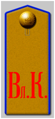

Вольский кадетский корпус ведет свое начало с 1859 г., когда в Вольске было открыто четырехклассное Саратовское училище Военного ведомства, которое в 1869 г. было преобразовано в Вольскую военную прогимназию. Вольская прогимназия занимала уникальное место среди военно-учебных заведений России, так как с самого начала она была предназначена служить воспитательно-исправительным учебным учреждением. В первый же год ее существования вВольскую прогимназию было переведено около 30 человек, по характеру своего поведения, успеваемости и наклонностям заслуживавшие исключения из военных гимназий. Вот с таким контингентом приходилось работать воспитателям Вольской прогимназии. По заключению одно время работавшего в ней известного психиатра И. Сикорского, лишь 15% обучавшихся в прогимназии исправились и могли быть направлены в военные училища, 50% подавали надежды на исправление, а 35% оставались трудными и нуждались в дополнительной исправительной работе.
19 мая 1886 г. прогимназия была преобразована в Вольскую военную школу, которая была предназначена для приема исключенных из кадетских корпусов за нарушения дисциплины кадет. Ставший в 1906 г. директором школы полковник П.В. Моралевский в течение короткого времени сумел установить в ней надлежащий порядок и добиться ее преобразования в кадетский корпус.
Погон кадета Вольского кадетского корпуса
Первый выпуск в Вольском кадетском корпусе произошел 29 мая 1914 г.В торжественной обстановке выпускникам вручали жетон с указанием номера выпуска и другой символикой. После молебна 12 кадетов-выпускников приложились к святому кресту и были окроплены святою водою. Затем состоялся парад и прощание со знаменем.
Программа обучения в корпусе полностью соответствовала программе, утвержденной Главным управлением военно-учебных учреждений для кадетских корпусов.
17 мая 1914 г. в присутствии Главного начальника военно-учебных учреждений великого князя Константина Константиновича состоялось освящение и торжественное вручение корпусу знамени.

Здание Вольского кадетского корпуса. Почтовая открытка. 1900-е гг.
В 1908 г. Вольская военная школа была преобразована в Вольский кадетский корпус.
19 апреля 1918г. Постановлением Вольского Совнаркома кадетский корпус был упразднен и уволены все его офицеры и преподаватели. На месте кадетского корпуса была организована школа «труда и знаний» - подобие современного профессионально-технического училища. Кроме того, в некоторых зданиях бывшего корпуса стал располагаться госпиталь.
История же вольцев закончилась в Иркутске. Осенью 1918 г. они были включены вместе с симбирскими кадетами в восстановленный Колчаком Иркутский кадетский корпус, который прекратил своё существование в январе 1920 г.